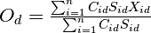
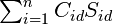

model.calculations module¶
-
model.calculations.by_exchange_ratio()[source]¶ Parameters: - supply_actor – ExchangeActor
- exchange_ratio – Decimal
Returns: Decimal
-
model.calculations.calc_actor_externalities(actor_name: str, model: model.base.AbstractModel, realized: typing.List[model.base.AbstractExchange]) → decimal.Decimal[source]¶ Calculate the externalities from an exchange
Parameters: - actor_name – current actor
- model – model
- realized – realized exchanges
Returns: the Decimal value of the externality
-
model.calculations.calc_adjusted_nbs(actor_issues: typing.List[model.base.ActorIssue], updates: {}, actor: str, new_position: decimal.Decimal, denominator: decimal.Decimal) → decimal.Decimal[source]¶ Adjust the list over ActorIssues and calculates the new nash bargaining solution
Parameters: - actor_issues – List[ActorIssue]
- updates – dictionary with key (actor) and value (position)
- actor – string, current actor
- new_position – int, the new position
- denominator – Decimal, the cached denominator
Returns: Decimal, the new nash bargaining solution
-
model.calculations.calc_adjusted_nbs_by_position(actor_issues, updates, actor: str, x_pos, new_nbs: decimal.Decimal, denominator: decimal.Decimal)[source]¶ Calculate the new position of the given actor when the NBS is adjusted
Parameters: - actor_issues –
- updates –
- actor –
- x_pos –
- new_nbs –
- denominator –
Returns:
-
model.calculations.calc_nbs(actor_issues: typing.List[typing.ActorIssue], denominator: decimal.Decimal) → decimal.Decimal[source]¶ Calculate the Nash bargaining solution.
This is calculate in the following way:

Parameters: - actor_issues – all the other actors on this issue
- denominator – the pre-calculated (and cached) denominator: 
Returns: Decimal
-
model.calculations.calc_nbs_denominator(actor_issues: typing.List[model.base.ActorIssue]) → decimal.Decimal[source]¶ Calculate the denominator for this issue
Parameters: actor_issues – all the other actors on this issue Returns: Decimal
-
model.calculations.exchange_ratio(delta_x, salience, power, dominator)[source]¶ Calculate the exchange ratio
Parameters: - delta_x – the absolute distance between the old position and the new position
- salience – the actor salicen
- power – the actor power
- dominator – sum(c*s) for all actors on this issue
Returns: the exchange ratio
-
model.calculations.expected_utility()[source]¶ Parameters: - actor –
- demand_exchange_ratio –
- supply_exchange_ratio –
Returns: